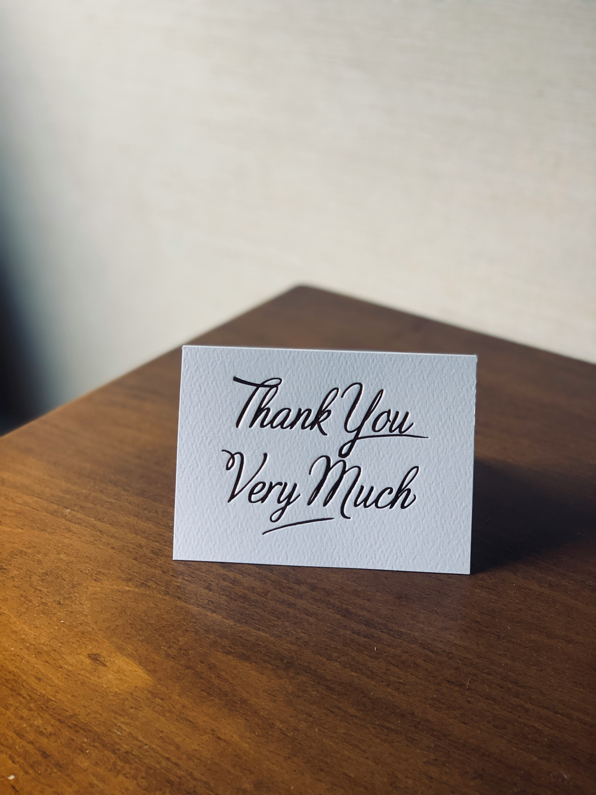

About Me
Assalamualaikum! I am Khadija Umar Farooq,Student of class 12. I am studying PreEngineering and I belongs to Hyderabad, Pakistan This page is created by under the guidance of my respected teacher Ma'am Afshan Qasim
My Daily Schedule
Fjar Prayer - 5:00 AM


Breakfast - 7:00 Am
College Time - 8:00 AM to 1:00 PM
Lunch And Rest - 1:30 PM
Coding Practice - 4:00 PM
Maghrib And Dinner - 7:00 PM
Isha Prayer - 8:00 PM
Study/Rivision - 8:30 PM
Sleep - 10:30 PM
Today's To Do list
Finish homework and Tasks
Revision
Learn something new
Practice HTMl & CSS
Prepare Notes
My Goals
Stay consistent with time management,improve coding skills, and balance studies with personal growth.
OverFlow Example
This is very very very very very very very very very very very very very very very very very long line to test horizontal scrolling.
I am
So
Thank
Ful
To
Ma'am
Afshan Qasim
For
Her
Guidance
In
HTML
And
CSS
So
Thank
Ful
To
Ma'am
Afshan Qasim
For
Her
Guidance
In
HTML
And
CSS